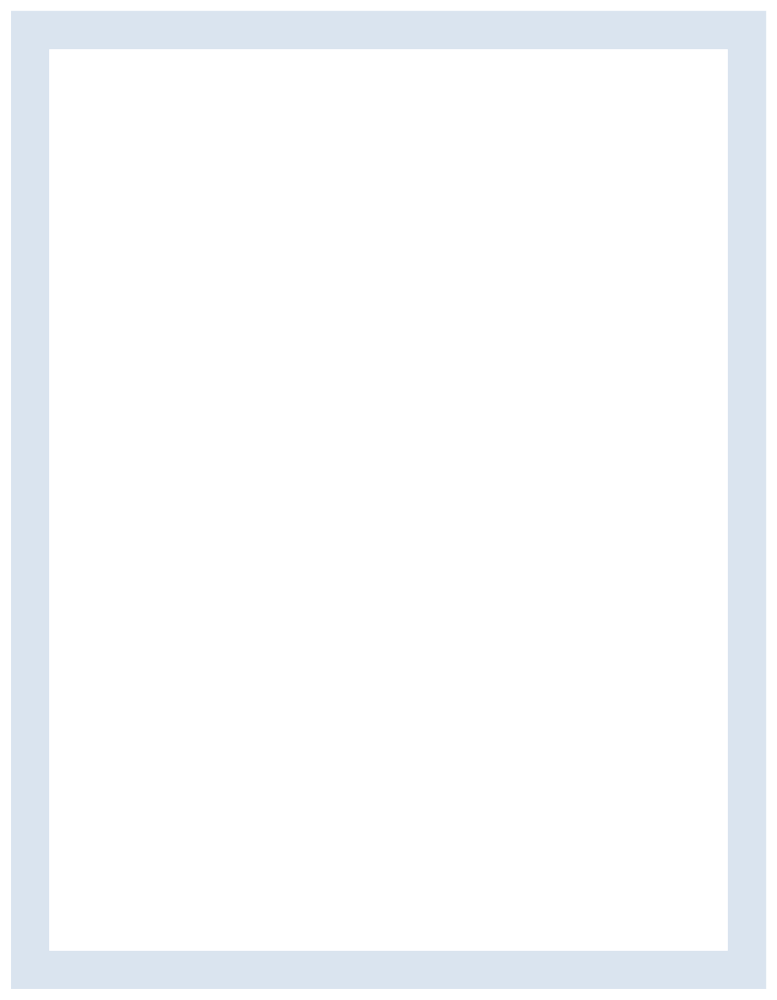

E
Elvira Fagerholm
1997-06-25-7145
Nelinsgatan 24, 60234 Norrköping elvfa573@student.liu.se
076-039 05 13
Portfolio
Jag är en hallänning som sedan 2020 bott i Norrköping. Jag stortrivs här och går mitt 3e och sista år på programmet grafisk design och kommunikation. Efter examen planerar jag på att bo kvar i det vackra
Norrköping.
AUGUSTI 2020-JUNI 2023
JUNI 2021
NOVEMBER 2018
FEBRUARI 2022 – FEBRUARI 2023
Jag har under mitt år i phadderiet Legionen jobbat med att planera
mottagningen för de nya studenterna. Mitt ansvar inför mottagningen låg i att dels hålla intervjuer och delegera uppgifter till ca 140 faddrar. Därefter var det mitt ansvar att se till att
faddrarna kände sig säkra i sina uppgifter och att de förstod och respekterade
mottagningspolicyn. Detta säkerställdes dels genom att jag var en av de som
planerade och höll i fadderutbildningarna. Därefter skickade jag ut information och höll jag löpande möten med faddrarna för
att få en överblick över hur mottagningen.
JUNI 2021 – JUNI 2022
Som ansvarig för näringsliv & alumni har jag haft hand om kommunikation och olika tillställningar som hålls med anknytning till näringslivet och alumner. T.ex sammankomster som
Byråöl, mentorskapsprogrammet eller lunchföreläsningar av olika slag. Mitt arbete i styrelsen syftade till att du främja relationen mellan näringslivet/ alumnerna och sektionens studenter. utöver detta deltog jag på möten med Näringslivsrådet, LinTek.
E
Elvira Fagerholm
Jag är väldigt nöjd över min praktiktid på HiQ under våren 2022. Det har resulterat i en god kontakt med företaget och diverse
arbetsmöjligheter med företaget Clownerna!
Jag startade ett eget företag under hösten 2022 för lite frilansande designarbete. Väldigt häftigt och ett stort steg för mig.
Jag skapade en marknadsföringskampanj i sammarbete med East Sweden Game för att få fler kvinnor och ickebinära känna sig inkluderade och välkomna in i spelbranschen.
Jag har ex antal hobbies. Rita, måla, dreja, skulptera, sy, bygga m.m, egentligen allt
nytt och kreativt.
Jag köpte nyligen en elbas på tradera och har planer på att lära mig Jönssonligan introt. Vi får se hur det blir med det.
AUGUSTI 2021 – JUNI 2022
Under mitt verksamhetsår i LitHanian arbetade jag med att illustrera grafiskt innehåll till kårtidningen. Ötöver detta deltog jag på våra möten i redaktionen och spånade roliga idéer och artiklar till kommande tidning.
JANUARI 2021 – AUGUSTI 2021
Min roll i GDKEX gick ut på att planera event till examensklassen, dessa
event bestod av en finsittning, utställning i Knäppingsborg och inspirationsföreläsningar. Jag skötte främst kommunikationen
med Knäppingsborg och såg till att utställningen kunde genomföras.
JUNI 2022 – NUTID
På Optiqo arebetar jag deltid med att uppdatera marknadsföringen på LinkedIn. Jag är även ansvarig för företagets hemsida, samt designer för grafik som trycks på företagets produkter.


E
Elvira Fagerholm
Ges gärna på efterfrågan!
elvfa573@student.liu.se 076-039 05 13
Portfolio: https://elvfager4f11.myportfolio.com